26recorded runs
Corvin, Picsean, Sauran, Vespine, Wolfkinheroes tried
stage 7, room 136, 6 bosses (Sauran)furthest progress
0deaths logged
| Run id | Date | Build | Hero | Player type | Difficulty | Outcome | Furthest progress | Deaths | |
|---|---|---|---|---|---|---|---|---|---|
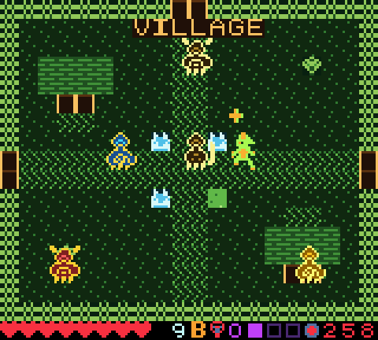 | 20261124-0410-805476ea-easy-sauran-full-w5 | Nov 24, 2026 3:58 AM ET | 805476ea | Sauran | machine official-wrap-v13 | easy | timeout | stage 7, room 136, 6 bosses | 0 |
 | 20261124-0340-805476ea-easy-sauran-full-w3 | Nov 24, 2026 3:38 AM ET | 805476ea | Sauran | machine official-wrap-v13 | easy | timeout | stage 5, room 104, 4 bosses | 0 |
 | 20261124-0315-805476ea-easy-sauran-full-w5 | Nov 24, 2026 3:09 AM ET | 805476ea | Sauran | machine official-wrap-v13 | easy | timeout | stage 6, room 124, 5 bosses | 0 |
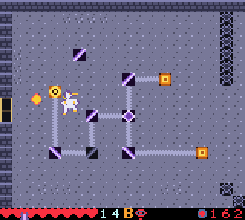 | 20261124-0145-805476ea-easy-corvin-full-w1 | Nov 24, 2026 1:34 AM ET | 805476ea | Corvin | machine official-wrap-v13 | easy | timeout | stage 6, room 115, 5 bosses | 0 |
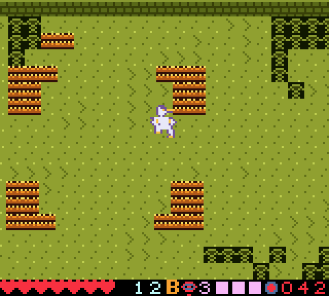 | 20261123-2035-805476ea-easy-corvin-full | Nov 23, 2026 8:32 PM ET | 805476ea | Corvin | machine official-wrap-v13 | easy | timeout | stage 5, room 102, 4 bosses | 0 |
 | 20261123-1945-805476ea-easy-corvin-full | Nov 23, 2026 7:45 PM ET | 805476ea | Corvin | machine official-wrap-v13 | easy | timeout | stage 3, room 40, 2 bosses | 0 |
 | 20261123-1905-805476ea-easy-corvin-full | Nov 23, 2026 7:05 PM ET | 805476ea | Corvin | machine official-wrap-v13 | easy | timeout | stage 2, room 28, 1 boss | 0 |
 | 20261123-1648-684bac5c-easy-corvin-stage-start-boss | Nov 23, 2026 4:46 PM ET | 684bac5c | Corvin | machine official-wrap-v1 | easy | timeout | stage 4, room 62, 3 bosses | 0 |
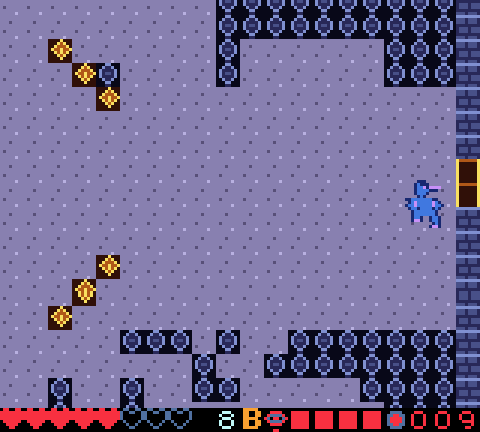 | 20261123-1640-285670f7-easy-corvin-v10 | Nov 23, 2026 4:10 PM ET | 285670f7 | Corvin | machine bfs-pilot-v4 | easy | timeout | stage 1, room 13 | 0 |
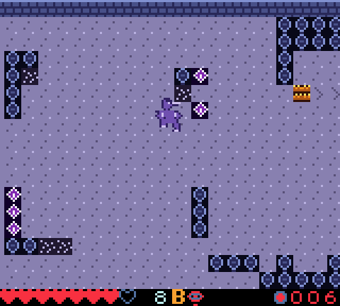 | 20261123-1620-285670f7-easy-corvin-v8 | Nov 23, 2026 4:05 PM ET | 285670f7 | Corvin | machine bfs-pilot-v3 | easy | timeout | stage 1, room 14 | 0 |
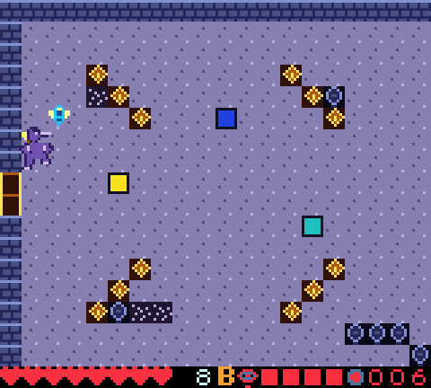 | 20261123-1612-285670f7-easy-corvin-v7 | Nov 23, 2026 4:02 PM ET | 285670f7 | Corvin | machine bfs-pilot-v3 | easy | timeout | stage 1, room 13 | 0 |
| 20261123-1605-285670f7-easy-corvin-v6 | Nov 23, 2026 3:58 PM ET | 285670f7 | Corvin | machine bfs-pilot-v3 | easy | timeout | stage 1, room 13 | 0 | |
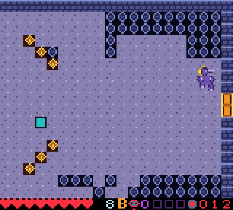 | 20261123-1558-285670f7-easy-corvin-v5e | Nov 23, 2026 3:54 PM ET | 285670f7 | Corvin | machine bfs-pilot-v2 | easy | timeout | stage 1, room 13 | 0 |
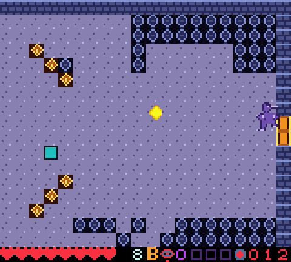 | 20261123-1556-285670f7-easy-corvin-v5d | Nov 23, 2026 3:53 PM ET | 285670f7 | Corvin | machine bfs-pilot-v2 | easy | timeout | stage 1, room 13 | 0 |
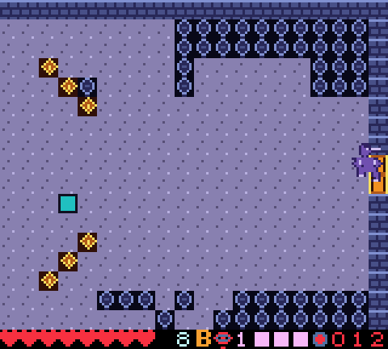 | 20261123-1555-285670f7-easy-corvin-v5c | Nov 23, 2026 3:52 PM ET | 285670f7 | Corvin | machine bfs-pilot-v2 | easy | timeout | stage 1, room 13 | 0 |
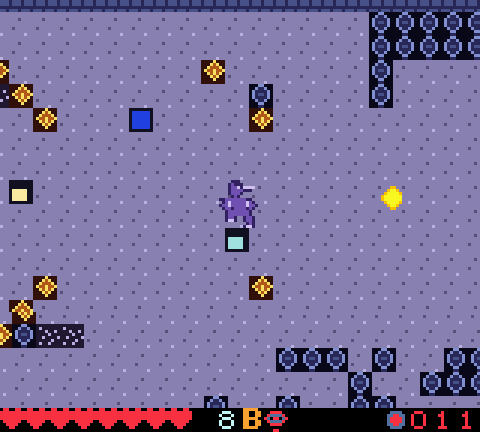 | 20261123-1553-285670f7-easy-corvin-v5b | Nov 23, 2026 3:51 PM ET | 285670f7 | Corvin | machine bfs-pilot-v2 | easy | timeout | stage 1, room 13 | 0 |
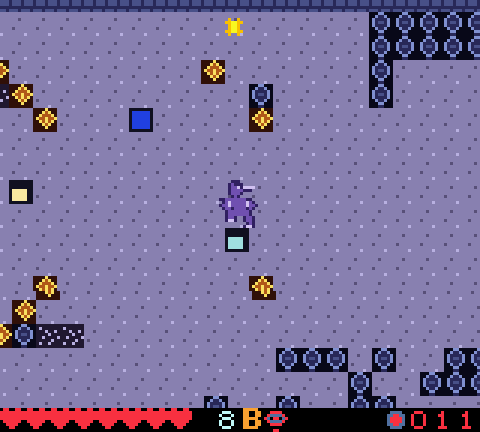 | 20261123-1552-285670f7-easy-corvin-v5probe | Nov 23, 2026 3:50 PM ET | 285670f7 | Corvin | machine bfs-pilot-v2 | easy | timeout | stage 1, room 13 | 0 |
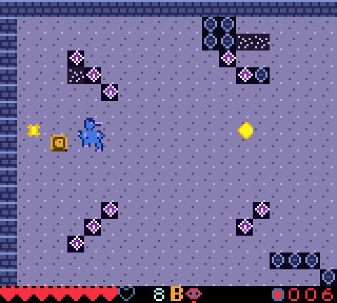 | 20261123-1550-285670f7-easy-corvin-v4probe | Nov 23, 2026 3:49 PM ET | 285670f7 | Corvin | machine bfs-pilot-v2 | easy | timeout | stage 1, room 12 | 0 |
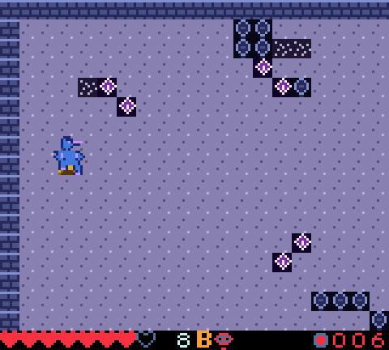 | 20261123-1548-285670f7-easy-corvin-v3 | Nov 23, 2026 3:48 PM ET | 285670f7 | Corvin | machine bfs-pilot-v2 | easy | timeout | stage 1, room 12 | 0 |
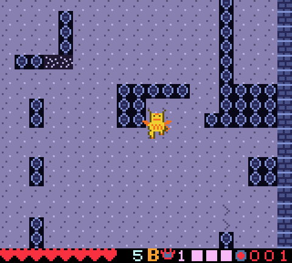 | 20261123-1545-285670f7-easy-vespine | Nov 23, 2026 3:45 PM ET | 285670f7 | Vespine | machine bfs-pilot-v2 | easy | timeout | stage 1, room 4 | 0 |
 | 20261123-1542-285670f7-easy-wolfkin | Nov 23, 2026 3:42 PM ET | 285670f7 | Wolfkin | machine bfs-pilot-v2 | easy | timeout | stage 1, room 7 | 0 |
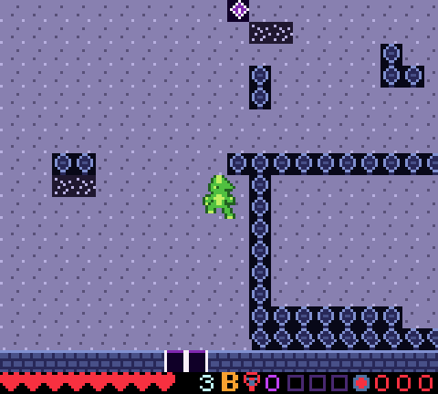 | 20261123-1542-285670f7-easy-sauran | Nov 23, 2026 3:42 PM ET | 285670f7 | Sauran | machine bfs-pilot-v2 | easy | timeout | stage 1, room 11 | 0 |
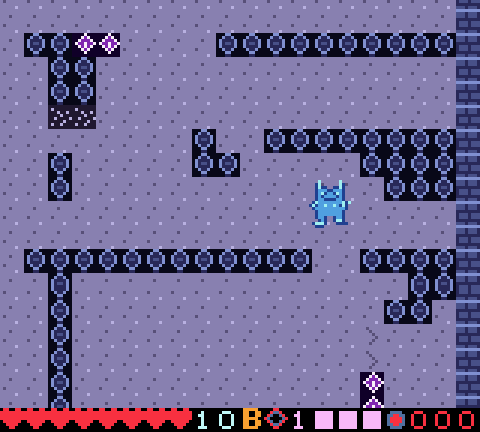 | 20261123-1539-285670f7-easy-picsean | Nov 23, 2026 3:39 PM ET | 285670f7 | Picsean | machine bfs-pilot-v2 | easy | timeout | stage 1, room 8 | 0 |
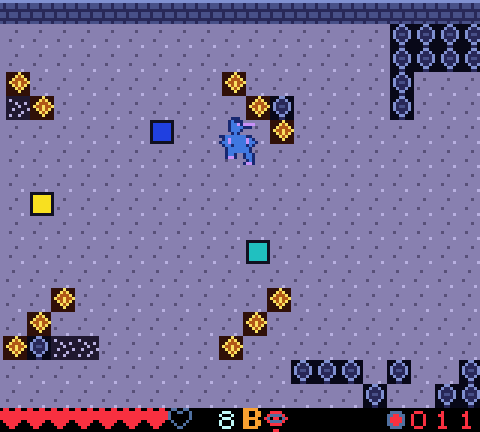 | 20261123-1537-285670f7-easy-corvin | Nov 23, 2026 3:37 PM ET | 285670f7 | Corvin | machine bfs-pilot-v2 | easy | timeout | stage 1, room 13 | 0 |
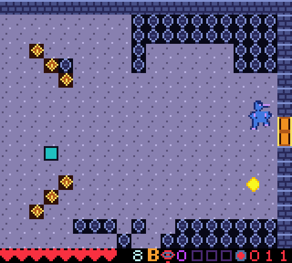 | 20261123-1535-285670f7-easy-corvin-probe | Nov 23, 2026 3:36 PM ET | 285670f7 | Corvin | machine bfs-pilot-v2 | easy | timeout | stage 1, room 13 | 0 |
 | 20261123-1526-285670f7-smoke | Nov 23, 2026 3:26 PM ET | 285670f7 | Corvin | machine greedy-ranged-v1 | easy | timeout | stage 1, room 7 | 0 |